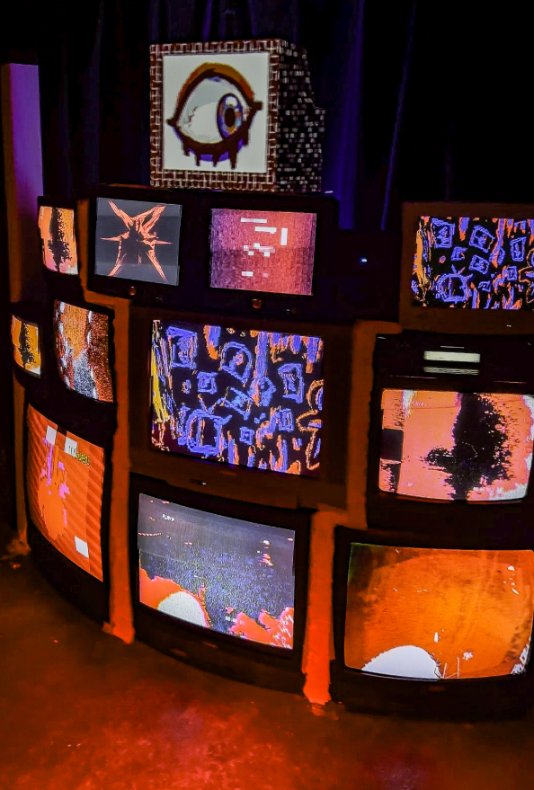
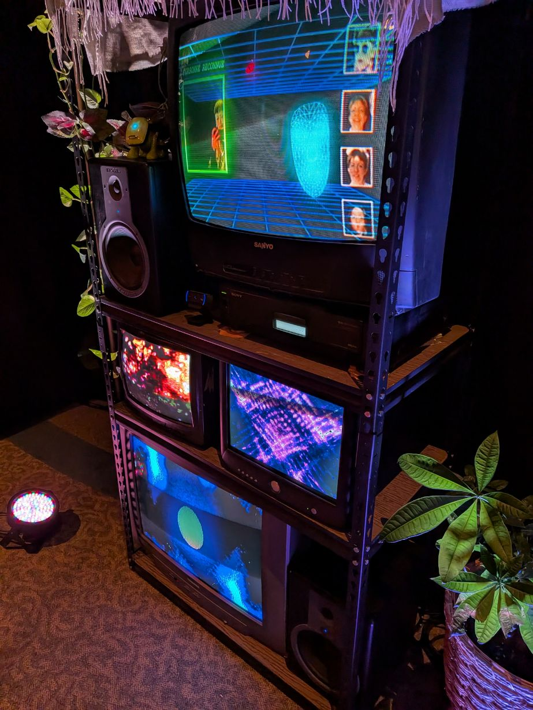
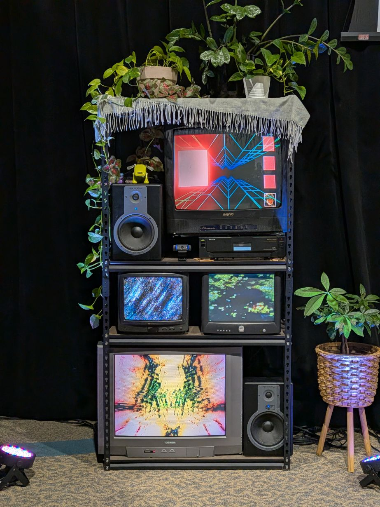
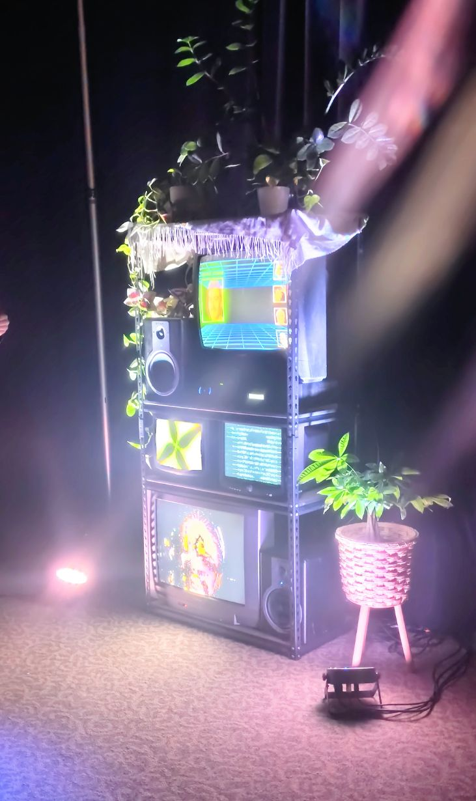

Installations interactives
(16/21)
M.O.N.A II présenté à  Chaos Média ➡
est une évolution plus légère et transportable de l’installation originale
Chaos Média ➡
est une évolution plus légère et transportable de l’installation originale
L'installation utilise des caméras qui captent la face et la présence des visiteurs.
Accompagnés d'un système sonore surround génératif, la bande sonore diffusée via un ensemble de 4
haut-parleurs placés sur l'étagère, réagit en temps réel aux gestes
des visiteurs, offrant une ambiance sonore unique à chaque interaction.
Rôle :
En tant que concepteur et intégrateur sonore du projet, ma mission était de créer une signature
audio cohérente avec l’ambiguïté de l’installation. J’ai développé des ambiances discrètes et
organiques, ainsi que des signaux sonores déclenchés par la détection et l’archivage des visages. Le
travail sonore devait demeurer subtil, presque imperceptible au premier abord, afin de renforcer
l’impression d’un environnement familier, tout en révélant progressivement la présence d’un système
actif.
Project owner : Clément Boucher
Conception sonore : Jean-Christophe Zephir
Reconnaissance faciale : Sasha Bédard
Scénographie et installation physique : Dominic Roberts
Développement backend et intégration : Raton Gosselin
Création visuelle : Maxime Simard
Images5 photos



